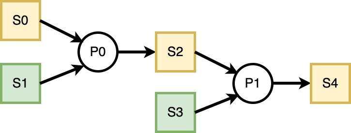

Executive Summary
The concept of Real-Time can be best explained as a set of guarantees that are given and that need to be met within a predetermined time period. Usually, though not necessarily, this is a short time period. In the case the guarantees are not met before the deadline has been reached, then the performance of the real-time system either degrades or the system has failed completely.
For a blockchain to achieve real-time operations, it has to have low latency and indirectly a high throughput, hopefully without sacrificing decentralization and security.
This is a problem of scaling a blockchain, and several approaches exist, each with its advantages and limitations. These approaches can be grouped into on-chain and off-chain scaling solutions, with the main difference being whether there exist a need for changing the blockchain’s protocol in some way.
The main focus of this research is put on the off-chain scaling in the Ethereum Ecosystem and how can a Decentralized Application (DApp) potentially achieve something that resembles real-time operations.
The research proposes a framework consisting of an off-chain and on-chain part where the on-chain part would be used to enforce rules that the off-chain code needs to honor.
The ideas proposed here would need to be expanded upon and thoroughly tested in real-world conditions to completely assess their practical significance.
Further research should also take into consideration on-chain scaling, namely ETH2.0, as well as an exciting concept of creating a network of private sovereign blockchains built specifically for the DApp’s needs.
Introduction
Ethereum’s Layer 1
Ethereum blockchain, as defined in,1 can be viewed as a “transaction-based state machine” that groups transactions into blocks which are then sequentially executed in the order that was set by the block’s creator - miner.
Before being included inside a block, the transactions reside in the pending transaction pool. Miners have complete control over what transactions get included and in what order. Each transaction advances the chain’s state for which the miners are rewarded fees paid by the Externally-Owned-Account(EOA)* that initiated the transaction.
In essence, the more the EOA is willing to pay for the service of including their transaction, the more likely it is will be included in the next block. This creates the problem in the situation of blockchain’s network congestion - as the transactions are being created at a faster rate than they can be processed, fees drastically increase, and it becomes a competition between different EOAs, which leads to a bad user experience.
To ease the load put on the Ethereum Mainnet (Layer 1 - L1) chain and effectively perform scaling, multiple approaches exist: Sidechains and schemes commonly referred to as Layer 2 (L2) solutions. L2 solutions include State Channels, Plasma, and Rollups (Optimistic and Zero-Knowledge based).
* Ethereum account can be defined as a private-public keypair mapped to an address. EOA is a type of an Ethereum account where the private key is known and “externally” controlled, in contrast to smart contract accounts where the private key is not known, and only the address exists.
Off-chain Scaling Approaches
When considering approaches to Ethereum’s scaling problem, this paper considers only Ethereum Virtual Machine (EVM) compatible sidechains and optimistic rollups.
Sidechains
Sidechains are completely independent parallel blockchains to the Ethereum’s L1, with which they can communicate over two-way bridges. They introduce their own set of parameters and operate on different rules.
For example, Polygon, a popular Ethereum sidechain, uses Proof-of-Stake for its consensus mechanism, with block times being around 2.3 seconds2 (Ethereum’s average block time is between 12 and 14 seconds)3
Optimistic Rollups
Unlike Sidechains, Optimistic Rollups have their security rooted in the L1 chain.
As Vitalik Buterin, the founder of Ethereum discusses in4 :
“Instead of putting all activity on the blockchain directly, users perform the bulk of their activity off-chain in a”layer 2” protocol. There is a smart contract on-chain, which only has two tasks: processing deposits and withdrawals and verifying proofs that everything happening off-chain is following the rules. There are multiple ways to do these proofs, but they all share the property that verifying the proofs on-chain is much cheaper than doing the original computation off-chain.”
In Optimistic Rollups, after a state is proposed, there exists a period where it can be disputed, after which it cannot be longer challenged.
While anyone can propose a state, one of the optimistic rollups - Arbitrum One chain has used a concept of a “sequencer”5:
The sequencer is a specially designated full node, which is given limited power to control the ordering of transactions. This allows the sequencer to guarantee the results of user transactions immediately, without needing to wait for anything to happen on Ethereum. So no need to wait five minutes or so for block confirmations–and no need to even wait 15 seconds for Ethereum to make a block.
The company behind Arbitrum has recently introduced another L2 concept chain - AnyTrust Chains6, which is operated by a “committee” of nodes signing the state that will later be put on-chain. If nodes go offline or refuse to cooperate, the chain reverts to a standard protocol.
Bridges and Cross-chain Applications
To enable cross-chain communication, there exist Bridges with the purpose of transferring assets and passing messages. The benefit of bridges is that users can move to a different chain if their needs require it. For example, when either transaction cost is too high or when there is more of a specific user activity going on the target chain - i.e., Non-Fungible Token (NFT) trading.
Bridges operate between two extremes - trusted (there is a centralized entity that is being trusted) and trustless (there is no need for the centralized entity).7
The security of bridges, however, remains troublesome. As Buterin has pointed out in,8 in the case of a 51% attack of the chain from which funds are being moved, attacker can broadcast a transaction that deposits some funds to the target chain and then revert it, as soon the assets are minted on the target chain. He states that:
“… while I am optimistic about a multi-chain blockchain ecosystem (there really are a few separate communities with different values and it’s better for them to live separately than all fight over influence on the same thing), I am pessimistic about cross-chain applications.”
Application-specific Blockchains
Instead of having all applications competing for the same resources, a DApp can run its own blockchain. There can exist inter-communication between those private and public chains through bridges.
Each chain operates with a unique set of rules and validators - making them sovereign but less decentralized.
Concept of Time in Blockchains
Blockchains operate in discrete time as the state is advanced only when a block is created and validated. It is worth noting that Ethereum’s Yellow Paper[2] states only that the current block’s timestamp should be strictly greater than its predecessor’s timestamp - not what’s the maximum difference between those two values.
This leads to blocks being produced at non-constant time intervals and the concept of time being distorted. When periods and deadlines are mentioned in this paper, it is meant in terms of block numbers.
Goals & Methodology
This paper tries to give a thought framework and a set of underlying principles that can be used to create a DApp that comes as close to real-time operations as possible.
It considers only EVM compatible chains when doing this and reasons how their properties can enable those operations.
Results & Discussion
The main ideas presented in this research are the separation of DApp’s functionality into parallel processes of different priorities while providing guarantees that a part of the process will be executed in a predefined period.
It breaks the DApp into its on-chain code (a set of smart contracts) and off-chain code (operates under rules imposed by the on-chain part).
On-chain code
Parallezization of Processes
Rather than separating DApp’s functionality into different contract methods with only one method being called per transaction, it is possible to have one method capable of executing different sequences of method calls and accomplishing more.
In the example shown below, there exist three separate processes(P0, P1, P2) that perform operations on the same set of data. Processes P0 and P1 are independent of each other and have no other dependencies (if EVM allowed concurrency, they could be executed in parallel). P2 is, however dependent on P0 and so before calling P2 we need to call P0.
contract Example_0 {
...
function execute (uint[] operation, uint[] data_0) public onlyAdmin returns (bool) {
for (uint i = 0; i < operation.length; ++i){
if (operation[i] == 0){
//P0 : calculate the sum of numbers in `data_0` and put in the `sum` storage variable
} else if (operation[i] == 1){
//P1 : store the entire `data_0` into the storage variable `buffer`
} else if (operation[i] == 2){
//P2 : if the `sum` even returns 'true'
}
}
return false;
}
...
}This setup allows us to create “programmable” sequences of operations and a higher degree of freedom. We can call the execute function with its operation argument set to [0, 2], [1], [0, 2, 1], [1, 0, 2] or [0, 1, 2]. We could also execute a single process multiple times by repeating a number corresponding to the process, though in the example above, that would not make much sense.
Persistence across Transactions
In the previous example, everything happens in the context of one single transaction, but it doesn’t have to. There can exist another process - P3 that would read from the buffer variable and perform a different operation on its data. Now the order of operations becomes even more important. Because P3 reads from the buffer, we could first call P1 that stores the data_0 into the buffer and then P3 or first call P3 and after P1, which would exhibit a completely different behavior.
Prioritization of Processes
It is obvious that there are limitations to this approach - transaction size and the transaction cost. This is where prioritization comes in, as not all processes are created equal - some need to be executed more frequently in a shorter period of time while others are less important and can have higher latency. It is up to the DApp’s off-chain code to monitor, decide and optimize for the right moment when a process should be executed.
Providing Guarantees: Committing to Promises
Processes can depend upon each other; that is, they depend on the result(state) produced by previously executed processes. As there is so much that can fit into a single transaction, DApp doesn’t have to execute a process and produce a result right away - it can make a claim about that result and simultaneously commit to the promise that it will justify the claim later.
Honoring Commitments
Commitments made obviously need to be honored. Otherwise, there is no point. If the deadlines are not met, DApp should be penalized, and the users affected should be compensated.
However, there is no direct reason to halt the execution of the processes - they can operate on claims. The issue now becomes that they effectively act on promises - if it is found later on that the claim has not been honored, the processes and all of their results should be affected as well. An example of this dependency is shown in Figure 1.

Figure 1: Operating on Claims
For simplicity, states (S0, S1, S2, S3, S4) are just uint variables, while P0 and P1 are addition and multiplication operations, respectively. The yellow color indicates that a claim has been made for that variable, while green says that the claim has been honored. We see that claiming S0 affects S2 and S4.
It gets even more complicated when a process operates on and produces an update to the same variable. For instance, in Figure 1, if the S2 is fixed to always be equal to S0. The on-chain code would need to keep track of what is affected if the specific claim will not be honored.
How to effectively implement mechanisms that would take into account all of these concerns should be part of separate research.
Off-chain code
Off-chain code’s responsibility can be summed up to:
- monitor the state of the contract and all of the commitments that need to be honored
- decide what to put inside the transaction by predicting when is the best time to execute a process
Monitoring the on-chain activity
In the case where only the admin account can alter the contract’s state, off-chain code can maintain a separate record offline that will periodically be checked with the actual state read from the chain. If it is possible for users to interact directly with the contract, then the chain needs to be read more often - one approach would be to parse the blocks as soon as they are validated.
Optimization of action sequences
Deciding on how to structure a transaction is a more complex problem, and its main part resides in the scheduling of processes. When should a specific process be scheduled depends on what claims need to be honored and when, as well as the state of the network. If the demand for the network’s resources is high, the execution cost is high as well, so it is better to issue a transaction that will use a lot of resources when the demand becomes lower. However, there is no formal guarantee when a transaction will be mined; there would need to exist models that would try to predict and speculate how the demand will change over time and how much to incentivize the miners.
Bursts of transcatiions
Another important concept is that an EOA can create multiple transactions that can be included in the same block. The miner needs to honor only the order in which they are issued.9 This can be used to enable “bursts” of transactions in order to catch up with the claims that are pending. If there are multiple accounts interacting with the contract, then the order is not guaranteed so there would need to exist some form of synchronization across transactions.
Conclusion
This research has defined a set of principles on how an individual DApp can be structured in order to more effectively distribute its functionality. The ideas proposed have not been tested in practice, so there exists a cloud of doubt about whether this approach is generalizable and sufficient for a large number of DApps.
The research has operated on the assumption that only the DApp’s admin account can alter the on-chain state of a contract, whether by aggregating** the users’ activity or by issuing commands that are made possible by on-chain code. There exist a problem of what happens if the DApp’s off-chain code goes offline, the users should not suffer for it, and so there needs to exist a mechanism that would enable the users to alter the contract’s state as well, which introduces more complexities in the DApp’s design.
The main proposed direction for further research is taking an existing real-world DApp and restructuring its code to enable “parallelization”. Also, as everything is dependent on the off-chain’s code correct scheduling of actions studies and simulations would need to be conducted based on a specific chain’s properties to see how much a chain can handle in terms of the block size, block time, transaction’s execution cost…
Another direction would be Ethereum’s on-chain scaling solution - ETH 2.0, as well as private chains and non-EVM chains and their approaches.
**By collecting signed messages from users that correspond to the action that the user wants to make. This, however, introduces the potential for censorship as well as manipulation when a message will be included in a transaction (both in terms of block numbers and in terms of ordering of messages).
Bibliography
Footnotes
‘Ethereum Whitepaper’, Ethereum.org <<https://ethereum.org>> [accessed 27 June 2022].↩︎
Polygonscan.com, ‘Polygon PoS Chain Average Block Time Chart | PolygonScan’, Polygon (MATIC) Blockchain Explorer <<http://polygonscan.com/chart/blocktime>> [accessed 27 June 2022].↩︎
‘Blocks’, Ethereum.org <<https://ethereum.org>> [accessed 27 June 2022].↩︎
‘An Incomplete Guide to Rollups’ <<https://vitalik.ca/general/2021/01/05/rollup.html>> [accessed 26 June 2022].↩︎
‘Inside Arbitrum \(\cdot\) Offchain Labs Dev Center’ <<https://developer.offchainlabs.com/>> [accessed 27 June 2022].↩︎
Offchain Labs, ‘Introducing AnyTrust Chains: Cheaper, Faster L2 Chains with Minimal Trust Assumptions’, Offchain Labs, 2022 <<https://medium.com/offchainlabs/introducing-anytrust-chains-cheaper-faster-l2-chains-with-minimal-trust-assumptions-31def59eb8d7>> [accessed 27 June 2022].↩︎
‘Introduction to Blockchain Bridges’, Ethereum.org <<https://ethereum.org>> [accessed 26 June 2022].↩︎
Vbuterin, ‘The Fundamental Secu…’, R/Ethereum, 2022 <[www.reddit.com/r/ethereum/comments/rwojtk/ama_we_are_the_efs_research_team_pt_7_07_january/hrngyk8/](https://www.reddit.com/r/ethereum/comments/rwojtk/ama_we_are_the_efs_research_team_pt_7_07_january/hrngyk8/)> [accessed 26 June 2022].↩︎
‘Ethereum Mining - EthHub’ <<https://docs.ethhub.io/using-ethereum/mining/>> [accessed 21 June 2022].↩︎